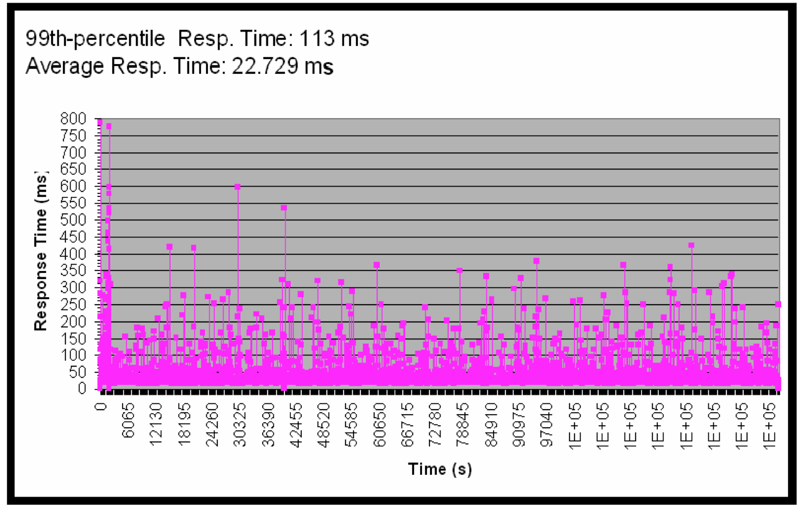
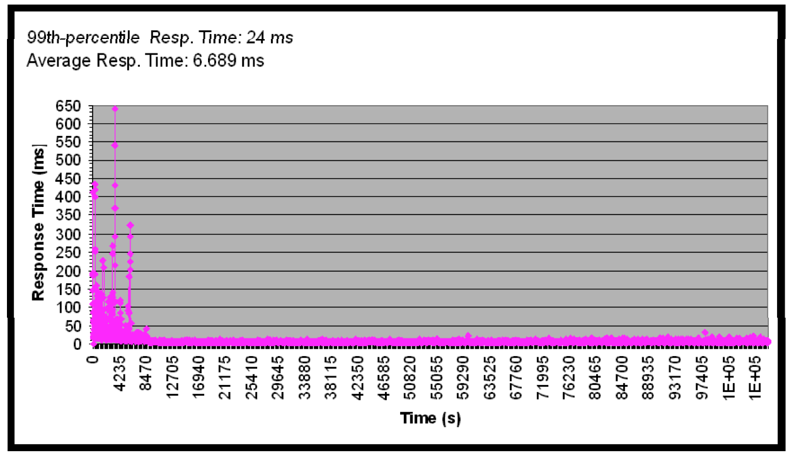

3.5 近实时垃圾回收
对于垃圾回收来说，实时系统是个美好的愿望。无论垃圾回收器把任务完成的多漂亮，只要有垃圾回收存在，运行时就包含了不确定性。即使由垃圾回收引入的延迟可以降低，通过算法减少STW式的操作，但运行时行为的不确定性仍无法彻底消除。
那么，到底什么是实时系统？事实上，很多人误解了实时系统这个词，为了避免产生误解，这里将实时分成 软实时（soft real-time）和 硬实时（hard real-time）两个概念分别阐述。
3.5.1 软实时与硬实时
硬实时（hard real-time）一般指更加传统的实时系统，可能是合成器或心脏起搏器之类的，要求能够100%确定系统的行为，而目前使用自动内存管理的运行时还没几个能做到100%的确定性，至少在不大量修改应用程序和编程语言的构造以控制垃圾回收的情况下，还做不到100%的确定性。
例如，为了在Java中实现实时系统，**JSR（Java Specification Request）1**中指定了用于与运行时进行交互的API（javax.realtime包中的类），以便控制垃圾回收的执行。如果是开发新系统，这还是比较好办的，但对那些已有的系统来说，引入新的API和语义可能会带来巨大的风险，有时甚至根本无法完成。即使技术上是可行的，修改已有系统的关键模块仍然代价不菲。因此，软实时的概念应运而生。
软实时（soft real-time）是指运行时系统可以接受一定程度的延迟，并对暂停时间加以控制，这样即使应用程序的行为仍然存在不确定性，单次的暂停时间也不会超过某个阈值。这也是JRockit Real Time的实现基础。
3.5.2 JRockit Real Time
事实证明，对于大多数要求有一定程度确定性的复杂系统来说，如果能够保证将暂停时间限制在某个阈值之内就足够了。如果这种保证真的能够顺利实现的话，就可以在不修改已有系统的情况下，提升系统的确定性，并降低系统延迟。
JRockit Real Time的主要卖点就是可以在不修改已有系统的情况下保证系统有稳定的延迟。从用户角度来说，暂停时间大概在几毫秒，这对那些运行在现代CPU架构的、新近的JRockit发行版来说根本不是什么问题。
很遗憾，事情并没有这么简单，正如在并发垃圾回收一节中介绍的，低延迟带来了垃圾回收整体时间的延长。相比于并行垃圾回收，并发垃圾回收的难度更大，而且频繁中断垃圾回收的话则可能带来更多的麻烦。事实上，这并非什么大问题，因为大多数使用JRockit Real Time的用户更关心的系统的可预测性，而不是减少垃圾回收的总体时间。大多数用户认为暂停时间的突然增长比垃圾回收总体时间的延长更具危害性。
下面是应用程序的响应时间的变化图，是在WebLogic SIP Server上运行电信系统得出的结果，这里并没有启用JRockit Real Time。从图中可以看出，响应时间的标准差比较大。

3.5.2.1 软实时有效么？
软实时是JRockit Real Time的核心机制。但非确定性系统如何提供指定程度的确定性，例如像垃圾回收器这样的系统如何保证应用程序的暂停时间不会超过某个阈值？严格来说，无法提供这样的保证，但由于这样的极端案例很少，所以也就无关紧要了。
不过，包治百病的药肯定是没有的，无法保证暂停时间的场景也是普遍存在的。但实践证明，对于那些堆中存活对象约占30%～50%的应用程序来说，JRockit Real Time的表现可以满足服务需要，而且JRockit Real Time的各个发行版都在不断提升30%～50%这个阈值，并降低可支持的暂停时间阈值。
如果实现应用程序时无法JRockit Real Time，那么还可以通过其他一些方法调优垃圾回收器。在排查应用程序延迟过高的问题时，除了垃圾回收器的相关因素外，还要注意用户应用程序自身实现的可能性，很多时候应用程序程序中对锁的不当使用是造成延迟过高的主要原因。JRockit Mission Control中包含了一些诊断工具，有助于排查相关问题。
常可以听到某某交易系统由于对更低的延迟和更快的响应时间，每天可以多处理多少多少美元交易的案例，使用了JRockit Real Time后，无需升级硬件，就可以使每天的交易量有明显提升。
下图与之前的统计图运行的是同一个程序，唯一的区别在于启用了JRockit Real Time，把期望暂停时间的阈值设置为10ms。从图中可以看到，在经过JVM热身阶段后，JVM的行为就趋于稳定了。

人们可能会认为，上图中开始部分的抖动是由于JVM在努力达到稳定状态之前所作的各种尝试所致，例如在这阶段可能做了大量的代码优化工作。事实上，确实是这样，但单就这个基准测试来说，最开始那部分延迟的抖动是因为Java应用程序的中隐藏的bug而导致，与垃圾回收和自适应优化无关。这个问题后来已经修复了。
而且我们注意到到，对于设定的10ms响应时间的目标，JRockit Real Time毫无压力，只不过是垃圾回收的总体时间稍稍延长而已。
3.5.2.2 工作原理
那么JRockit是如何实现如此高性能的垃圾回收呢？关键点有三：
- 高效的并行执行
- 细分垃圾回收过程，将之变成几个可回滚、可中断的子任务
- 高效的启发式算法
高效的并行执行（efficient parallelization）并不是什么新概念。并发垃圾回收器早已出现了，JRockit Real Time在处理并发问题时并没有多少概念创新或技术飞跃，更多的是对细节的处理。例如确保同步操作高效完成，尽可能避免锁操作，确保堆已有的锁的操作不会饱和，以及高效的工作线程调度算法。
事实上，实现低延迟的关键仍是尽可能多让Java应用程序运行，保持堆的使用率和碎片化程度在一个较低的水平。在这一点上，JRockit Real Time使用的贪心策略，及尽可能推迟STW式的垃圾回收操作，寄希望于问题能够由应用程序自身解决，或者只有在非做不可的情况下，才会执行STW式的操作，最好在具体执行的时候需要处理的对象能够尽可能少一些。
JRockit Real Time中，垃圾回收器的工作被划分为几个子任务。如果在执行其中某个子任务时（例如对堆中的某一部分内存进行整理），应用程序的暂停时间超过了阈值，那么就放弃该子任务，恢复应用程序的执行。用户根据业务需要指定可用于完成垃圾回收的总体时间，有些时候，某些子任务已经完成，但没有足够的时间完成整个垃圾回收工作，这时为了保证应用程序的运行，不得不废弃还未完成的子任务，待到下次垃圾回收的时候再重新执行，指定的响应时间越低，则废弃的子任务可能越多。
在前面介绍过的标记阶段工作比较容易调整，可以与应用程序并发执行。但清理和整理阶段则需要暂停应用程序线程。幸运的是，标记阶段会占到垃圾回收总体时间的90%。如果清理和整理工作所花费的时间过长，则不得不终止当前垃圾回收任务，重新并发执行，期望问题可以自动解决。之所以将垃圾回收划分为几个子任务就是为了更便于这一目标的实现。
当然，这其中还涉及到几种启发式算法的使用，对运行时系统的简单改造可以帮助JRockit Real Time更好的指定决策，例如使用更复杂的写屏障来跟踪每个线程中被标记为 dirtied的卡片数量，因此代码的执行时间会比传统的垃圾回收中写屏障的执行时间稍长，但可以为分析垃圾回收的行为提供更详细的数据，如果某个线程的写操作明显多于其他线程，那么就需要运行时系统对该线程特别注意，做一些相关优化。此外，JRockit还对单个线程中所执行的所有写屏障操作进行统计，以便对进行相关性能的优化。